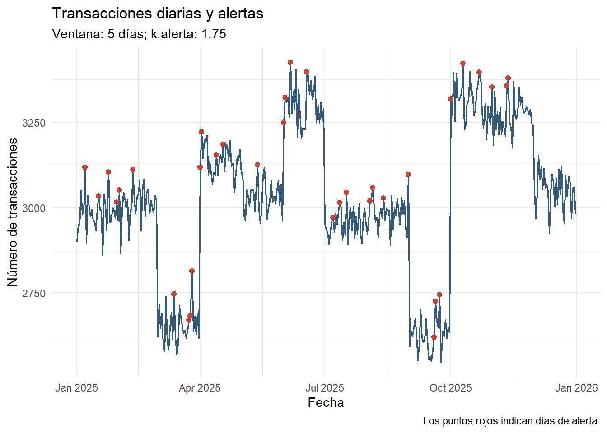

Para cada fecha se cuenta el número de transacciones. La media y la desviación estándar muestral se calculan con los días anteriores; los primeros días, hasta completar la ventana, no se evalúan como alertas.
La alerta se activa cuando el conteo del día supera la media de los días previos más k.alerta veces su desviación estándar.
Code
alertas.ej1 <- ej1[ej1$alerta %in%TRUE, c("fecha", "n.tx", "media", "desv")]knitr::kable(alertas.ej1, digits =2, caption ="Días con alerta según los parámetros personales")
Días con alerta según los parámetros personales
fecha
n.tx
media
desv
7
2025-01-07
3118
2983.4
41.09
17
2025-01-17
3033
2968.8
27.03
24
2025-01-24
3104
2966.6
71.67
30
2025-01-30
3016
2975.4
19.37
32
2025-02-01
3052
2987.6
22.30
42
2025-02-11
3111
2982.4
45.87
72
2025-03-13
2747
2628.2
43.11
83
2025-03-24
2670
2636.8
12.95
84
2025-03-25
2683
2640.2
19.06
85
2025-03-26
2813
2650.4
25.97
91
2025-04-01
3117
2650.4
33.07
92
2025-04-02
3222
2746.2
209.79
103
2025-04-13
3153
3100.2
23.63
108
2025-04-18
3185
3134.0
25.17
133
2025-05-13
3125
3039.2
29.81
152
2025-06-01
3248
3033.4
50.34
153
2025-06-02
3323
3072.0
109.86
157
2025-06-06
3426
3293.4
35.18
169
2025-06-18
3398
3233.4
24.98
188
2025-07-07
2971
2928.2
24.35
193
2025-07-12
3014
2964.6
24.58
198
2025-07-17
3044
2958.0
48.60
215
2025-08-03
3019
2961.2
27.23
217
2025-08-05
3058
2977.0
44.81
225
2025-08-13
3027
2965.8
32.65
243
2025-08-31
3096
2976.4
51.06
262
2025-09-19
2619
2572.6
25.50
263
2025-09-20
2725
2574.0
28.25
266
2025-09-23
2745
2648.0
53.11
274
2025-10-01
3318
2638.2
22.61
283
2025-10-10
3422
3338.8
30.90
295
2025-10-22
3397
3319.8
40.20
304
2025-10-31
3353
3261.0
41.91
315
2025-11-11
3357
3239.8
34.19
316
2025-11-12
3379
3252.6
60.75
2.1 Serie diaria
Code
grafico.ej1 <- ggplot2::ggplot(ej1, ggplot2::aes(x = fecha, y = n.tx)) + ggplot2::geom_line(color ="#315A7D", linewidth =0.6) + ggplot2::geom_point(data = ej1[ej1$alerta %in%TRUE, ],color ="#C44536", size =1.8 ) + ggplot2::labs(title ="Transacciones diarias y alertas",subtitle =sprintf("Ventana: %s días; k.alerta: %s", ventana, k.alerta),x ="Fecha", y ="Número de transacciones",caption ="Los puntos rojos indican días de alerta." ) + ggplot2::theme_minimal(base_size =11)ggplot2::ggsave(filename ="info/figuras/ejercicio1_alertas.png",plot = grafico.ej1, width =9, height =5, dpi =300)grafico.ej1

3 Ejercicio 2 — Ley de Benford por cantón
La función benford.canton() filtra el canal seleccionado, obtiene las frecuencias de los primeros dígitos de los montos y compara sus proporciones con las esperadas por la ley de Benford. El MAD corresponde al promedio de las diferencias absolutas; la clasificación sigue los rangos de Nigrini.
El canal analizado presenta un MAD de 0.0027. El cantón con MAD más alto dentro de ese canal es Montes De Oca; 0 cantones superan 0,015. En el canal Web, el MAD más alto corresponde a Esparza.
Los máximos de MAD corresponden a cantones con pocas transacciones (Montes de Oca: n = 490; Esparza en Web: n = 181), así que la desviación por sí sola no demuestra fraude y debe interpretarse considerando el tamaño de muestra.